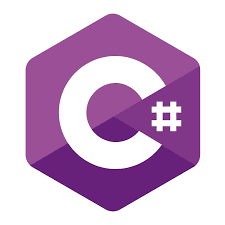

Aulas particulares de programção
Pyton
O Python é uma linguagem de programação como você já deve ter ouvido falar de várias outras que existem. Só que foi desenvolvido para ser simples, fácil de aprender e muito versátil, ou seja, você vai poder utilizar essa linguagem para diversas tarefas. Pode construir aplicativos, criar sites, desenvolver programas, criar jogos em, fazer análise de dados, inteligência artificial, entre outras atividades. Então você tem muitas opções e como é uma linguagem que é mais fácil de aprender é uma linguagem excelente para você começar no mundo da programação.
Java
Java é uma linguagem de programação e plataforma computacional lançada pela primeira vez pela Sun Microsystems em 1995. Existem muitas aplicações e sites que não funcionarão, a menos que você tenha o Java instalado, e mais desses são criados todos os dias. O Java é rápido, seguro e confiável. De laptops a datacenters, consoles de games a supercomputadores científicos, telefones celulares à Internet, o Java está em todos os lugares!
C#
O C# é uma linguagem de programação muito popular, sendo uma excelente escolha devido a sua baixa curva de aprendizado e simplicidade (mas sem deixar de ser uma linguagem poderosa). Além disso, ela é a linguagem principal do .NET Framework, o framework para desenvolvimento da Microsoft.
R
R é uma linguagem de programação multi-paradigma orientada a objetos, programação funcional, dinâmica, fracamente tipada, voltada à manipulação, análise e visualização de dados. Foi criado originalmente por Ross Ihaka e por Robert Gentleman no departamento de Estatística da Universidade de Auckland, Nova Zelândia.